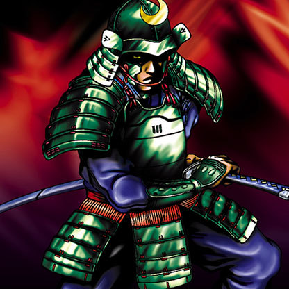

Masaki the Legendary Swordsman

STATS
ATK: 1100
DEF: 1100DECK COST
Deck Cost per Card: 22Fusion List (12 Possible Fusions)
- Masaki the Legendary Swordsman + Ancient Jar = Minomushi Warrior
- Masaki the Legendary Swordsman + Armaill = Flame Swordsman
- Masaki the Legendary Swordsman + Charubin the Fire Knight = Flame Swordsman
- Masaki the Legendary Swordsman + Dancing Elf = Celtic Guardian
- Masaki the Legendary Swordsman + Fiend's Hand = Zombie Warrior
- Masaki the Legendary Swordsman + Fire Eye = Flame Swordsman
- Masaki the Legendary Swordsman + Fire Reaper = Zombie Warrior
- Masaki the Legendary Swordsman + Fusionist = Tiger Axe
- Masaki the Legendary Swordsman + Kagemusha of the Blue Flame = Flame Swordsman
- Masaki the Legendary Swordsman + Morphing Jar = Minomushi Warrior
- Masaki the Legendary Swordsman + Mushroom Man = Bean Soldier
- Masaki the Legendary Swordsman + Yamatano Dragon Scroll = Dragoness the Wicked Knight